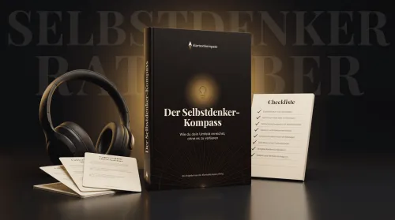

Selbstdenker-Kompass — Das Hörbuch
Produktprofil · Marktplatz-Daten 2026-10-13 · Verkaufsseiten-Recherche 2026-10-13 · Kategorien: Personal Development, Dating, Relationships & Romance, Education
- Selbstdenker-Kompass — Das Hörbuch ist ein/e Hörbuch (Download) in Personal Development und Dating, Relationships & Romance, vertrieben über den Digistore24-Marktplatz von Anbieter Klartextkompass, gelistet seit 2026-09-08.
- Listenpreis $39.18; Digistore24 meldet — Checkout-Konversion, — Stornierungsquote und 30 % Affiliate-Provision.
- Verdienst pro Verkauf (Affiliate): $11.75 (Anbieter-seitige Statistik, keine Prognose).
Interesse an Selbstdenker-Kompass — Das Hörbuch? Aktueller Preis, Boni und Garantiebedingungen finden Sie auf der offiziellen Seite des Anbieters:
Offizielle Verkaufsseite ansehen
Affiliate-Link (Werbung) — wir verdienen ggf. eine Provision, ohne Mehrkosten für Sie.

Marktplatz-Daten
| Produkttyp | Hörbuch (Download) |
|---|---|
| Preis | $39.18 (Single payment, Installment) |
| Affiliate-Provision | 30 % |
| Garantie/Rückgabe | Laut Verkaufsseite des Anbieters — vor dem Kauf auf der offiziellen Seite prüfen |
| Anbieter | Klartextkompass (gelistet seit 2026-09-08) |
| Marktplatz-Statistiken* | Checkout-Konversion — · Stornoquote — · Verdienst/Verkauf $11.75 |
* Anbieter-seitige Statistiken von Digistore24; sie hängen von der Traffic-Qualität ab und sind keine Prognose.
Marktplatz-Beschreibung des Anbieters
Das bietet dir der Selbstdenker-Kompass für Partner: ✓ Sehr hohe Verkaufs-Rate ✓ 30% Provision auf deine Verkäufe ✓ 7 % auf jeden Verkauf deiner Partner, die du für das Programm einlädst ✓ Lifetime Provision (Aftersales): 15% ✓ Geringe Rückgabe-Quote (<2%) ✓ Fertige Marketingmaterialien und Beiträge zum sofortigen Einsatz ✓ Persönliche Unterstützung beim Vertrieb durch das Klartextkompass-Team ✓ Laufendes E-Mail-Marketing, das die Wiederkaufsquote und damit deine Lifetime-Provision zusätzlich steigert ✓ Langfristige Partnerschaft mit weiteren Projekten aus dem Klartextkompass-Portfolio in Planung ✓ Positive Resonanz mit zahlreichen dankbaren Kundenstimmen Das Problem und die Lösung Der Vater hält an einer Ernährung fest, die ihn krank macht. Die Mutter nimmt eine Diagnose hin, ohne sie zu hinterfragen. Beim Partner endet jedes ernsthafte Gespräch vor dem Fernseher, und ein alter Freund macht sich inzwischen lustig, sobald ein unbequemes Thema aufkommt. Wer das kennt, hat meist schon alles versucht: gute Argumente, gute Quellen, Geduld. Und ist trotzdem immer wieder an derselben Wand gescheitert, weil Argumente in solchen Gesprächen selten das eigentliche Problem lösen. Der Selbstdenker-Kompass setzt genau dort an. Er zeigt, warum diese Gespräche scheitern, und gibt Lesern wissenschaftlich belegte Methoden an die Hand, mit denen sie Menschen wieder erreichen, ohne die Beziehung aufs Spiel zu setzen. Für wen der Ratgeber passt Das Problem ist nicht auf eine einzelne Nische beschränkt, deshalb funktioniert der Ratgeber für ein breites Partnerspektrum. Besonders gut passt er zu Kanälen und Partnern aus der Persönlichkeitsentwicklung, der Achtsamkeit und dem Beziehungscoaching, dem Kommunikationstraining und der Familienberatung sowie dem aufklärungsnahen und systemkritischen Bereich. Die Rückgabequote liegt bei circa 3% und damit deutlich unter dem Branchendurchschnitt digitaler Ratgeber. Erste eigene Testbeiträge zeigen die Resonanz in der Praxis bereits: https://t.me/FreiheitDerGedanken/21722 https://t.me/FreiheitDerGedanken/21745 https://t.me/FreiheitDerGedanken/21698
Von der Verkaufsseite des Anbieters
Seitentitel: Das Hörbuch zum Selbstdenker-Kompass
Meta-Beschreibung: 3 Std. 14 Min. Hörbuch: Wie du mit Menschen im Gespräch bleibst, die anders denken. Ohne Streit und ohne dich zu verbiegen. Plus 6 Werkzeuge zum Ausdrucken.
Hauptüberschrift
Deine besten Argumente machen es schlimmer.
Abschnitts-Überschriften
- Der Schmerz, den niemand ausspricht.
- Wir haben uns diese Frage alle gestellt.
- Zwei von uns, kurz.
- Der Grund ist nicht, dass sie nicht zuhören wollen.
- Was passiert, wenn sie dich wirklich hören.
- Was im Selbstdenker-Kompass drinsteckt
- Stimmen aus der Erstleser-Phase
- Sechs Werkzeuge, die aus dem Hörbuch einen Werkzeugkasten machen
- Was dieser Zustand dich schon kostet.
- Du hast 14 Tage , um alles zu prüfen
Einstiegstext
Du siehst, was die Menschen um dich herum sich täglich antun. Deine Mutter. Dein Vater. Dein Partner. Dein bester Freund. Deine erwachsene Tochter. Du weißt, wohin das führt. Nur reden kannst du mit ihnen nicht mehr darüber. Das Hörbuch zum Selbstdenker-Kompass zeigt dir, wie es doch geht - zum Anhören, wo immer du gerade bist.
Du weißt, was das mit ihnen macht. Nicht aus einem Bauchgefühl, sondern weil du seit Jahren recherchierst . Du hast die Studien gelesen. Du kennst die Zutatenlisten. Du kennst die Zusammenhänge, die im Fernsehen nicht erklärt werden. Du kennst die Langzeitfolgen, die nirgendwo auf der Packung stehen.
Weil du gelernt hast, was passiert, wenn du etwas sagst. Dein Vater fühlt sich angegriffen. Deine Mutter verteidigt ihren Arzt. Dein Partner rollt mit den Augen. Dein Freund antwortet immer knapper. Dein Sohn nimmt die Kopfhörer ab und sagt:
Also sagst du nichts. Und schaust zu, wie die Menschen, die du liebst, weiter machen, was ihnen schadet. Und wie sich der Abstand zwischen euch mit jedem Monat vergrößert.
Fragen, die die Verkaufsseite beantwortet
- Wirkt das auch, wenn die Person besonders verschlossen ist?
- Ist das nicht das gleiche wie Gewaltfreie Kommunikation oder Coaching?
- Brauche ich Vorwissen in Psychologie?
- Ist 37,49 € nicht zu viel für ein Hörbuch?
- Werde ich damit meine Familie überzeugen?
- Was bekomme ich sofort nach dem Kauf?
Recherche-Methode: rohes HTML · 3875 Wörter · Qualität: rich · recherchiert am 2026-10-13. Vollständige Recherche-Datei (MD) ↗
Wie Produkte dieser Art geliefert werden
Allgemeiner Hinweis zu diesem Produkttyp (keine anbieterspezifische Anleitung): Hörbücher werden direkt nach dem Checkout als digitaler Download (MP3) geliefert — auf jedem Gerät abspielbar. Für die genaue Anwendung von Selbstdenker-Kompass — Das Hörbuch sind die offizielle Verkaufsseite und die enthaltenen Materialien maßgeblich.
Gut zu wissen
- Keine Garantie-Formulierung in unserer Recherche gefunden — bestätigen Sie das Rückgabefenster auf der offiziellen Seite, bevor Sie kaufen.
- Marktplatz-Zahlen (Preis, Provision, Konversion, Stornoquote) — Quelle: offizielle Digistore24-Marktplatz-API (Affiliate-Sicht), Stand 2026-10-13. Gegenprüfung: Marktplatz-Suche nach Produkt-ID 728238.
- Verkaufsseiten-Zitate — Quelle: https://www.klartext-kompass.de/hoerbuch/, abgerufen 2026-10-13 (Methode: rohes HTML). Verify: offizielle Seite öffnen.
- Garantie / Rückgabe — vom Anbieter festgelegt; vor dem Kauf auf der Verkaufsseite bestätigen.
- Nicht von uns geprüft: Produktqualität, Ergebnisse, Testimonials — kein Praxistest für dieses Listing durchgeführt.
Häufige Fragen zu Selbstdenker-Kompass — Das Hörbuch
Antworten aus dem Marktplatz-Snapshot (2026-10-13) und der Verkaufsseiten-Recherche (2026-10-13); Anbieteraussagen sind inline gekennzeichnet.
Was ist Selbstdenker-Kompass — Das Hörbuch?
Selbstdenker-Kompass — Das Hörbuch ist ein Angebot des Typs „Hörbuch (Download)" im Digistore24-Marktplatz, Anbieter: Klartextkompass, gelistet seit 2026-09-08. Eingepflegt unter Persönlichkeitsentwicklung und Flirt, Beziehungen & Romantik. Digistore24 wickelt Checkout, Lieferung und Rückgaben ab.
Wie viel kostet Selbstdenker-Kompass — Das Hörbuch?
Der Digistore24-Marktplatz listet es für $39.18 (single payment, installment). Preise legt der Anbieter fest und können sich ändern — der Marktplatz-Eintrag oben zeigt den Schnappschuss; die offizielle Verkaufsseite zeigt den aktuellen Preis.
Gibt es eine Geld-zurück-Garantie für Selbstdenker-Kompass — Das Hörbuch?
Unsere Verkaufsseiten-Recherche hat keine explizite Garantie-Formulierung gefunden. Viele Digistore24-Produkte bieten 60 Tage Geld-zurück, aber das legt jeder Anbieter selbst fest — bestätigen Sie es auf der offiziellen Verkaufsseite, bevor Sie kaufen.
Ist Selbstdenker-Kompass — Das Hörbuch seriös?
Wir bewerten keine Seriosität — wir veröffentlichen überprüfbare Zahlen: Anbieter Klartextkompass (gelistet seit 2026-09-08), Checkout-Konversion —, Stornoquote —, Affiliate-Verdienst/Verkauf $11.75 (alles Anbieter-seitige Marktplatz-Statistiken). Lesen Sie unsere 6-Punkte-Bewertungsmethode und entscheiden Sie anhand der Zahlen — oder diskutieren Sie Selbstdenker-Kompass — Das Hörbuch auf GitHub.
Wo kann ich Selbstdenker-Kompass — Das Hörbuch sicher kaufen?
Nur über die offizielle Verkaufsseite, die auf dieser Seite verlinkt ist (Checkout und Rückgaben laufen über Digistore24). Prüfen Sie dort Preis und Garantie vor der Bestellung. Der Link ist ein Affiliate-Link — der Kauf unterstützt diese Website ohne Mehrkosten für Sie.
Wie erhalte ich Selbstdenker-Kompass — Das Hörbuch nach der Zahlung?
Der Checkout läuft über Digistore24: Nach der Zahlung erhalten Sie Ihren Zugang oder Download per E-Mail und in Ihrem Digistore24-Kundenkonto. Lieferdetails für diesen Produkttyp: Hörbücher werden direkt nach dem Checkout als digitaler Download (MP3) geliefert — auf jedem Gerät abspielbar. Bei Problemen kann der Digistore24-Käufersupport Ihre Bestellung wiederherstellen.
Alle 50 Käuferfragen zu Persönlichkeitsentwicklung — das komplette Kategorie-FAQ.
Selbstdenker-Kompass — Das Hörbuch auf Reddit diskutieren
In Community-Threads vergleichen echte Käufer Erfahrungen. Wir verlinken Communities, keine einzelnen Posts — Threads verschwinden, Subreddits bleiben:
- Reddit-Suche nach „Selbstdenker-Kompass — Das Hörbuch" — Live-Ergebnisse, von uns nicht beeinflusst.
- Top-„Erfahrungs"-Treffer dieses Jahr — selbst nach Aktualität filtern.
Passendes auf Amazon.de
Physische Produkte und Zubehör, die häufig zusammen mit Selbstdenker-Kompass — Das Hörbuch gekauft werden:
- Personal Development auf Amazon.de — Top-Ergebnisse, Amazon-Ranking.
- Bestseller: Personal Development — live Liste von Amazon, von uns nicht kuratiert.
Werbung: Als Amazon-Partner verdient DigistorePicks DE an qualifizierten Käufen (Partner-tag adminstorede-21). Amazon setzt eigene Preise und Provisionen (niedrige einstellige Prozente — weit unter den 30–75% der Digistore24-Anbieter). Amazon ist ein Convenience-Angebot für Sachprodukte, kein Ersatz für das digitale Produkt oben.
Ähnliche Angebote in Persönlichkeitsentwicklung

Dauer: Laufzeit 24 Wochen / 6 Monate 1:1 Intensiv Coaching / NeuroZen ® Mentoring für DEIN persönliches Ziel 22 x ZoomCalls von ca. 60-90 Minuten 1 Tag VIP-Live

Dauer: Laufzeit 12 Wochen 1:1 Intensiv Coaching / NeuroZen® Mentoring für DEIN persönliches Ziel - 12 x ZoomCalls von ca. 60-90 Minuten - Datenaustausch via Mai

WOLKENWEICH Online-Begleitung - Dein 6-monatiger Premium Zugang - eingebettet, stabil von allen Seiten, geerdet, sicher, geborgen, ruhig Du erhältst einen Premi

MATRIXPRINZIP – High-Ticket-Produkt mit bis zu 820,56€ Provision pro Verkauf! Mindset, emotionale Intelligenz und finanzielle Intelligenz – genau die Fähigkeite
Weitere Angebote von Klartextkompass

Das bietet dir der Selbstdenker-Kompass für Partner: ✓ Sehr hohe Verkaufs-Rate ✓ 30% Provision auf deine Verkäufe ✓ 7 % auf jeden Verkauf deiner Partner, die du
Selbstdenker-Kompass — Das Hörbuch ist auch gelistet in
Flirt, Beziehungen & Romantik (173 Produkte) · Bildung (597 Produkte)
Ähnliche Preislage in Persönlichkeitsentwicklung

LOSLASSEN in verrückten Zeiten 3 Tages intensiv Workshop für mehr Energie & Klarheit Kummer und Ängste spürbar loslassen Fr. 2.12.: Sofort Angst und Unsiche

ImmoClear – Energetische Klärung für schnellere Immobilienverkäufe Warum verkaufen sich manche Immobilien nicht – obwohl Preis, Exposé und Vermarktung stimmen?

Verstehe dein inneres Kind ist ein psychologischer Minikurs, der den Teilnehmern beibringt: welche Kindheitsprägungen es gibt wie diese in der Kindheit entstehe

Künstliche Intelligenz verändert die HR-Arbeit grundlegend. Dieser praxisnahe Online-Kurs zeigt HR-Verantwortlichen, wie sie ChatGPT und andere KI-Anwendungen s
Ähnliche Suchanfragen
Wo Sie es sich ansehen können
Wo Sie es sich ansehen können
Aktuelle Preise, Garantie und Boni finden Sie auf der offiziellen Verkaufsseite:
Offizielle Verkaufsseite ansehen
Das ist ein Affiliate-Link (Werbung) — kaufen Sie darüber, verdienen wir ggf. eine Provision, ohne Mehrkosten für Sie.
Quellen & weiterführende Informationen
- Offizielle Verkaufsseite (aktueller Preis, Garantie, Boni): www.klartext-kompass.de/hoerbuch/ (Affiliate-Link)
- Öffentliche Digistore24-Produktseite: digistore24.com/product/728238
- Vollständige Recherche-Datei (Markdown, versioniert): content/products/59018-selbstdenker-kompass-das-h-rbuch.md
- Marktplatz-Kategorie: Persönlichkeitsentwicklung
Wie wir Produkte wie Selbstdenker-Kompass — Das Hörbuch bewerten
Sechs Prüfungen, ausschließlich mit offiziellen Marktplatz-Zahlen. Die vollständige Bewertungsmethode lesen · unsere Recherche-Standards & Kennzeichnung.
Fragen oder eigene Erfahrungen mit Selbstdenker-Kompass — Das Hörbuch?
Praxis-Tests veröffentlichen wir erst, nachdem wir ein Produkt selbst gekauft haben — aber Ihre Erfahrung hilft anderen Lesern: Diskussion zu Selbstdenker-Kompass — Das Hörbuch auf GitHub starten/verfolgen. Falsche Zahl gefunden? Korrektur melden — jede Seite zeigt ihre Datenstände, Korrekturen gelten für die ganze Website.